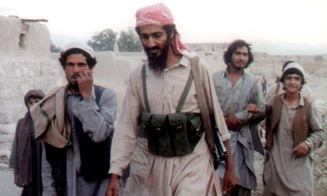
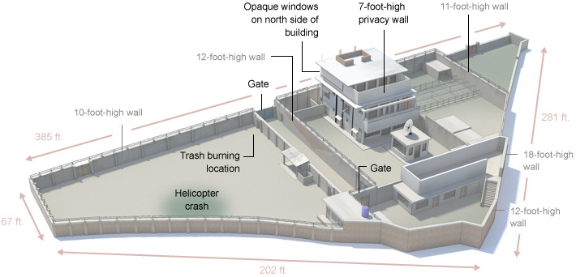

Young Bin Laden with Friends
Overview
Bin Laden's trajectory from Saudi construction-dynasty heir to the architect of the world's most lethal terrorist attack is not a story of sudden radicalisation. It is a story of conditions (personal, geopolitical, and structural) converging to enable a psychopathic vision to scale. Padilla, Hogan, and Kaiser's Toxic Triangle[4] requires three simultaneous conditions: a destructive leader, susceptible followers, and a permissive environment. The timeline below maps how all three crystallised across five decades.
Red entries mark events of particular analytical significance, the moments where the triangle's conditions locked into place.
Chronology of Escalation
Click any redacted passage to declassify
1957
Born into elite privilege, Jeddah, Saudi Arabia
17th of 52 children of construction magnate Mohammed bin Laden. Inherited wealth and status established the psychological conditions Hare & Babiak[2] identify as enabling narcissistic entitlement without accountability. Grandiosity was not merely tolerated; it was structurally produced by his position.
1968–76
Schooling and early radicalisation, Al-Thagher Model School
Exposed to Syrian Muslim Brotherhood teachers. The ideological architecture is laid during adolescence, a formative window that Kellerman[3] would identify as constructing the grievance-identity framework followers would later be recruited into.
1979
Soviet invasion of Afghanistan, first exercise of organisational leadership
Travels to Pakistan; funds and recruits Arab fighters (mujahideen). First real exercise of organisational command. The permissive environment (Padilla et al.) crystallises: superpower conflict creates ungoverned space, Western intelligence (notably CIA) provides covert support, and a generation of fighters is trained and radicalised in the same theatre.
1988
Al-Qaeda formally constituted
Hierarchical structure established with military, religious, finance, and media committees. This is not a militant group, it is a recognisable corporate organogram built to industrialise a psychopathic vision. The Bakan parallel is explicit: the organisation is constitutionally structured to project its costs (civilian death) onto third parties while the leadership remains shielded by bureaucratic distance.[1]
1991
Gulf War, US troops stationed in Saudi Arabia
The presence of American military forces on the Arabian peninsula becomes the central grievance bin Laden weaponises for recruitment. A structural condition, geopolitical, is converted into an ideological fuel supply for the organisation. Harris's[5] "ordinary evil" requires this kind of grievance normalisation.
1992–96
Sudan period, state sponsorship and organisational expansion
Relocates to Sudan with Sudanese government patronage. Runs agricultural businesses, construction projects, and terror infrastructure simultaneously, the clearest demonstration of the Bakan-style dual organisation: legitimate business as cover and funding mechanism for externalised harm.
1996
Declaration of War against the United States
First fatwa issued. Bin Laden performs the "visionary CEO", articulating a global mission that reframes grievance as sacred obligation. This is Bakan's mission statement as manipulation: language that recruits participants into a cause that serves the leader's psychopathic agenda while appearing to serve a transcendent purpose. The staging of the declaration (the calm authority, monastic setting, religious framing) is the "mask" Hare and Babiak describe.[2]
1998
US Embassy bombings, Kenya & Tanzania (224 killed)
Al-Qaeda demonstrates continental operational reach. The cell-based franchise model insulates leadership, Bakan's externalising of costs onto third parties is now literal: the organisation kills civilians in countries unconnected to its grievances and faces no direct consequences at leadership level. Padilla's permissive environment is confirmed: state failure in East Africa provides operational infrastructure.
2000
USS Cole bombing, Yemen (17 US sailors killed)
Further evidence of the committee structure's operational effectiveness. Planning is diffuse; accountability is zero. Harris's "diffusion of responsibility" mechanism. which allows participants to maintain psychological distance from the harm they enable, operates at full scale.[5]
2001
September 11, 2,977 killed; ~$10 billion in direct damages
Eighteen months of planning. Nineteen followers willing to die. $400,000 to 500,000 spent. The organisation's most catastrophic "product." Kellerman's diehards, those who had converted belief into identity and identity into action, execute a mission for which all three of Padilla et al.'s conditions had been simultaneously fulfilled. Harris's ordinary evil at industrial scale: not sadism, but role-distance, dehumanisation, and bureaucratised harm.[5]
2001–11
Fugitive decade, Afghanistan, Pakistan
Despite the decapitation of the Afghan state, Al-Qaeda's franchise model survives. The organisation's ideological product, not bin Laden himself, sustains followership. This is Kellerman's most important insight: when an organisation's followers are "diehards," removing the leader does not dissolve their commitment, it martyrises it.
2011
Killed in Abbottabad, Pakistan; Operation Neptune Spear
US Navy SEAL operation terminates bin Laden. Bin Laden's death diminishes but does not destroy the network, the hallmark of ideological rather than purely personal followership. Al-Qaeda affiliates (AQAP, AQIM, Al-Shabaab) continue operations. The mask is gone; the machine runs on.

Abbottabad compound / Operation Neptune Spear
Toxic Triangle, Padilla et al. Analysis
Three Conditions, One Outcome
PADILLA, HOGAN & KAISER (2007) TOXIC TRIANGLE APPLIED TO AL-QAEDA
| Triangle vertex | Padilla et al. requirement | Al-Qaeda manifestation |
|---|---|---|
| Destructive Leader | Personalised power, narcissism, negative life narrative | Bin Laden: inherited wealth, grandiosity, victimhood narrative (humiliation of Islam), psychopathic traits (Hare & Babiak) |
| Susceptible Followers | Unmet needs for belonging, identification with leader, personal grievance | Recruits from economically marginalised / politically disenfranchised Muslim populations; identity vacuum filled by ideological narrative |
| Permissive Environment | Instability, lack of checks, cultural context permissive of leader's behaviour | Post-Cold War governance vacuum; Afghan civil war; US foreign policy grievances; weak state infrastructure in recruitment zones |
References (this section)
[1]
Bakan, J. (2004). The Corporation: The Pathological Pursuit of Profit and Power. Free Press.
[2]
Hare, R. D. & Babiak, P. (2006). Snakes in Suits: When Psychopaths Go to Work. HarperCollins.
[3]
Kellerman, B. (2008). Followership. Harvard Business Press.
[4]
Padilla, A., Hogan, R. & Kaiser, R. B. (2007). The toxic triangle. The Leadership Quarterly, 18(3), 176–194.
[5]
Harris, G. (2004). Organisational Evil and the Banality of Bad Leadership. Course reading, as assigned.